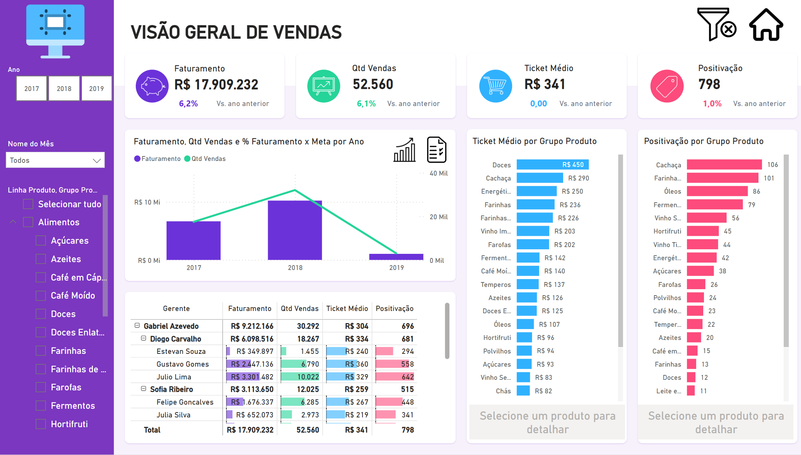

Análise de Metas e Vendas
Sobre o Projeto
Dashboard desenvolvido para visualização e análise de vendas e metas de uma loja fictícia, permitindo monitorar KPIs essenciais como faturamento, quantidade de vendas, ticket médio e positivação. O projeto fornece insights valiosos para tomada de decisões estratégicas e operacionais através de análises detalhadas de desempenho em diferentes níveis hierárquicos.
Objetivos do Projeto
- Analisar o desempenho de vendas comparando com o ano anterior
- Monitorar KPIs essenciais (faturamento, quantidade de vendas, ticket médio, positivação)
- Avaliar desempenho por gerente, supervisor e vendedor
- Analisar tendências e padrões de vendas por grupo de produtos
- Acompanhar metas e identificar desvios em tempo real
Componentes do Dashboard
- Análise comparativa de faturamento (atual vs. ano anterior)
- Gráficos de tendência e distribuição de vendas
- Matriz de desempenho por hierarquia
- Análise de ticket médio por grupo de produto
- Visualização de positivação por categoria
- Comparativo de metas atingidas vs. não atingidas
Recursos Técnicos
- Filtros dinâmicos (ano, mês, linha de produto, região, canal de vendas)
- Drill-through para detalhamento de dados
- Alertas de desempenho configuráveis
- Exportação para PDF e PowerPoint
- Compartilhamento via Power BI Service
Tecnologias Utilizadas
- Power BI (visualizações e dashboards)
- Power Query (ETL e transformação de dados)
- DAX (cálculos avançados)
- Excel (fonte de dados)
Principais Insights
- Identificação dos períodos de maior venda
- Análise de performance por vendedor
- Produtos mais rentáveis
- Regiões com melhor desempenho